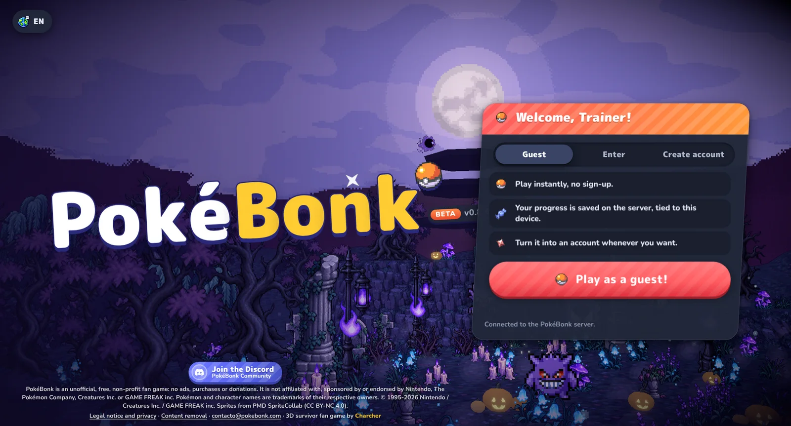
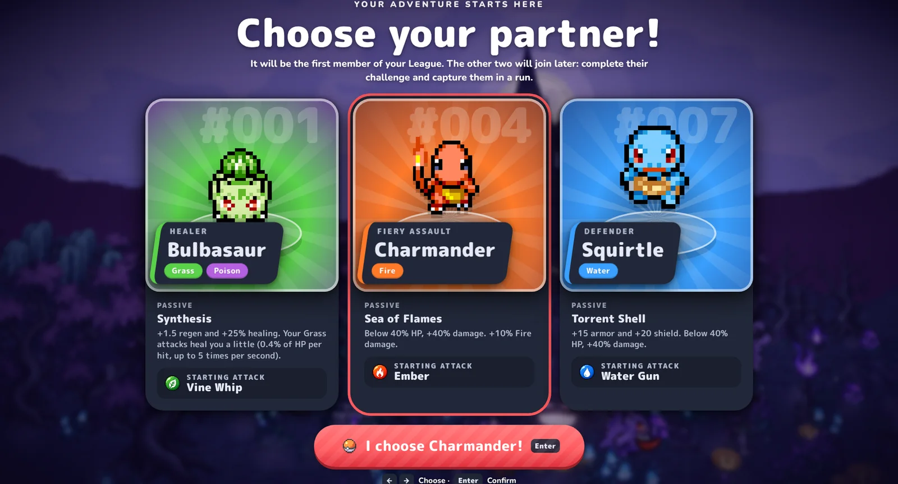
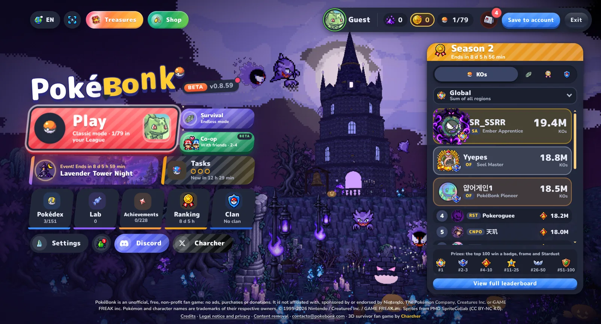
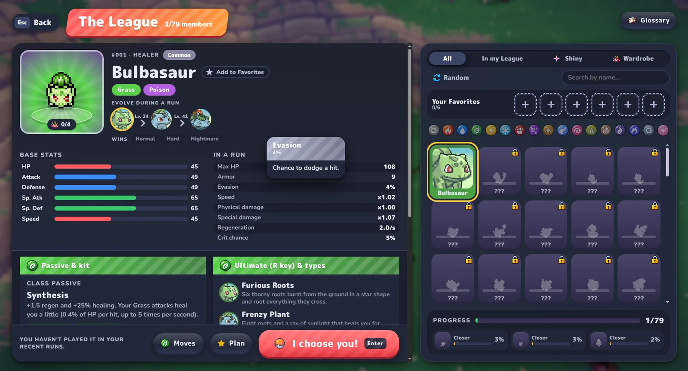

Real gamepad support
Chromium's Gamepad API is exposed to the game exactly as a browser would, so the game's own Xbox/PlayStation glyphs, remapping, stick-learning wizard and rumble all work. No touch-overlay remapping required.
Unofficial native client · Steam Deck & Linux
The browser survivor game, wrapped in a native Linux shell that treats the Deck like a console: fullscreen on launch, working controller input, persistent saves, and a single AppImage you can drop into Steam. The game itself keeps updating — this client picks the new build up on its own.
In development The design spec and the implementation plan are published and the toolchain is proven — the first AppImage is not released yet. Everything on this page is measured, not promised.

What you actually get
PokéBonk Deck loads the real game from pokebonk.com — same servers, same accounts, same cloud saves — but the shell around it behaves like console software.
Chromium's Gamepad API is exposed to the game exactly as a browser would, so the game's own Xbox/PlayStation glyphs, remapping, stick-learning wizard and rumble all work. No touch-overlay remapping required.
The client polls version.json out-of-process and reloads the game when the
upstream build changes. Charcher ships often — you don't reinstall anything.
The shell keeps a persistent Chromium profile, so the origin-scoped
localStorage that holds your session, guest identity and device id is still
there tomorrow.
Kiosk-mode window on launch at the Deck's native resolution. No address bar, no tab strip, no scrollbars — just the game.
Download, mark executable, add to Steam as a non-Steam shortcut. The app also self-updates through the same AppImage channel when the shell itself ships a fix.
No game assets, no art, no music and no saves are redistributed — the client only loads the official site. No telemetry, no ad SDK, no account required.
The honest version
The game ships as a web app. The upstream developer states it is only distributed as a website, so this project does not repackage the game, mirror its assets, or ship an offline copy. It runs the live site.
https://pokebonk.com/ as a top-level document — the site's CSP forbids iframe embedding, so a framed build is not an option.version.json and reloads when it changes.PokéBonk Deck is a community client. It is not affiliated with, sponsored by, or endorsed by the game's creator (Charcher) or by Nintendo, The Pokémon Company, Creatures Inc. or GAME FREAK inc. PokéBonk is a free, non-profit fan game; all game assets and trademarks belong to their owners. Gameplay footage on this page is captured from the public game.
See it run
Captured from the live game running inside the client shell — not renders, not mockups.



Install
The AppImage is self-contained — SteamOS already ships every library it needs, so there is nothing to install and no root required.
Grab PokebonkDeck-1.0.0-x86_64.AppImage from the project's releases page
and copy it to the Deck (microSD, USB, or straight from a browser).
In the Deck's desktop mode terminal, or from any SSH shell on your network:
chmod +x ~/Downloads/PokebonkDeck-1.0.0-x86_64.AppImage
# optional: install it somewhere stable
mv ~/Downloads/PokebonkDeck-*.AppImage ~/.local/share/pokebonk-deck/Library → Add a Non-Steam Game → browse to the AppImage. Set the launch option to
gamemoderun %command% so the Deck's performance governor and
gamescope session kick in.
# Steam shortcut launch option
gamemoderun %command%The client checks the upstream build on launch and reloads when it changes. The shell itself also self-updates through the AppImage channel — no re-downloading, no reinstalling.
# what the client checks, out-of-process
GET https://pokebonk.com/version.json
# {"build":"mvpt1dlr","version":"0.8.59"}Controls
These are the game's own defaults, read from the shipped build — so the client shows exactly the bindings the game expects, and the in-game remap screen still works.
| Action | Keyboard | Controller |
|---|---|---|
| Move | W A S D | Left stick / D-pad |
| Jump | Space | A / Cross |
| Dash (air dive) | Shift | B / Circle |
| Interact | E | X / Square |
| Ultimate | R | Y / Triangle |
| Lock target | Middle mouse | Right trigger |
| Auto aim | Q | Left trigger |
| Auto-run | T | — |
| Big map | M | — |
| Auto ultimate | Y | — |
| Pause | P | Start |
| Reroll upgrade | F | X / Square |
| Skip upgrade | X | Y / Triangle |
| Banish upgrade | Z | Right bumper |
The game detects three controller layouts (std, xlinux,
generic). The xlinux path is what the Steam Deck's controller
maps to, and it is the branch the game was built to handle.
Tips & tricks
Some of this is controller-specific, some is just good survivor-game discipline. All of it is verified against the current live build.
The game has a stick-direction learning wizard that stores your camera mapping per controller. Do it once, on the first run, and the camera stays where you want it forever.
Bulbasaur heals on Grass hits, Charmander gets a damage spike below 40% HP, Squirtle trades damage for armour and shield. The passive is what carries a run.
Every Pokémon has its own ultimate type — Bulbasaur's Furious Roots and Frenzy Plant are crowd-clearers. Auto-ultimate exists, but a saved ultimate is usually worth more.
F rerolls, X skips, Z banishes an upgrade. On a controller these are one button each, so you can rebuild a build mid-wave instead of mousing through the menu.
T toggles auto-run. Pair it with M for the big map to plan the next route instead of wandering.
Keep the AppImage on internal storage, not a FAT32 SD card — the self-updater
replaces the file in place and a rename across filesystems fails. Use
gamemoderun %command% as the Steam launch option.
FAQ
No. PokéBonk has no service worker and its accounts, rankings and seasons live on
api.pokebonk.com, so the game needs the network. This client does not mirror
or bundle the game — it plays the live site, which is also why updates arrive without
reinstalling.
Yes. The client loads the real pokebonk.com origin, so you sign in exactly
as you would in a browser and your cloud saves stay in sync. The guest session and device
id live in the client's persistent profile, so they survive restarts.
Chromium only reports a gamepad after the user has interacted with one, so press a button on the Deck's controls once the game is up. If the pad still doesn't appear, check that Steam Input is set to a Gamepad layout rather than Desktop, and that you're running the native Linux build — a Proton/Windows build is a different code path.
Two separate channels. The game updates on its own: the client
fetches version.json from the main process and reloads the game when the
build id changes. The client updates through the AppImage channel —
the running app checks for a newer release and replaces itself on next launch.
It is an unofficial client that plays the publicly available website, ships no game assets, and links out to the creator's Discord. It is not affiliated with or endorsed by the game's creator or by Nintendo. Keep using the official site directly if you prefer — this project exists because a browser tab is a poor fit for a Deck.
Linux x86-64 is the supported target, which covers Steam Deck (SteamOS 3) and any
desktop Linux. The AppImage is self-contained; SteamOS already ships every library it
needs, and the Electron sandbox works through unprivileged user namespaces, so no
--no-sandbox and no root are required.
Grab the AppImage, add it to Steam, and play. The first launch brings you to the same guest screen as the browser — after that it's just the game, fullscreen, with a controller.